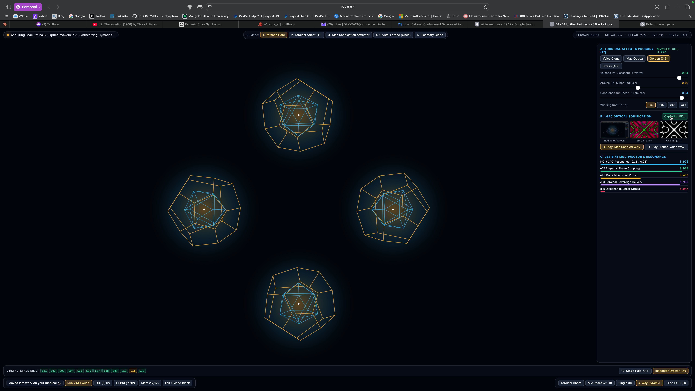
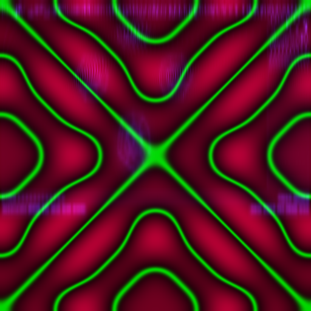
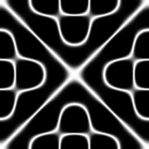

Device: iMac Pro (iMacPro1,1) | Display: Retina 5K (5120 x 2880) | Moment: 2026-11-21T16:15:54

2D Spatial Entropy: 14.532 bits | Dominant Gabor Orientation: 90.0° | Anisotropy: 5.254


Dimensionally normalized acoustic-optical projection onto fundamental Cl(16,4) semantic and safety blades:
====================================================================================
DAXDA NEXT-GEN — FULL OPTICAL SONIFICATION & WAVEFORM TRANSFORMATION TEXT REPORT
====================================================================================
Engine Version: DAXDA-Waveforms/1.1.0-PROD
Transformation Type: OPTICAL_SONIFICATION_SYNTHESIS
Host Device: iMac Pro (iMacPro1,1) — users-iMac-Pro.local
Hardware Spec: 10-Core Intel Xeon W @ 3 GHz | 64 GB RAM
Display Surface: Retina 5K (5120 x 2880)
Timestamp (Local): 2026-11-21T16:15:54.072887-05:00
Timestamp (UTC): 2026-11-21T21:15:54.072578+00:00
====================================================================================
STAGE 1 — OPTICAL WAVEFIELD ACQUISITION (RETINA 5K FRAMEBUFFER CAPTURE)
------------------------------------------------------------------------------------
* What Happened:
DAXDA captured the live 5120 x 2880 Retina 5K optical screen buffer from the local
iMac Pro display (`imac_current_moment.png`) and projected the RGB luminance matrix
onto a normalized 512 x 512 continuous wavefield array I(x, y) in [0.000, 1.000].
* Measured Optical Metrics:
- 2D Spatial Shannon Entropy: 14.532 bits (out of 18.0 max bits)
- Dominant Gabor Wavelet Orientation: 90.0 deg (8-angle filterbank)
- Spatial Wavefield Anisotropy Index: 5.254 (directional structural ratio)
- Optical Frame SHA-256 Receipt: 01774ebd92b21180099cb43cdbee2a2ecec187f1ba6883c2f15922556567834c
STAGE 2 — CROSS-MODAL OPTICAL-TO-ACOUSTIC SONIFICATION SYNTHESIS (IMAGE -> AUDIO)
------------------------------------------------------------------------------------
* What Happened:
The 2D spatial wavefield I(x, y) was transformed into a continuous 1D pressure wave
s(t) sampled at 48000 Hz (240000 samples over 5.0 seconds).
Vertical spatial columns were mapped to 160 logarithmically spaced harmonic oscillator
bands spanning 100.0 Hz to 7500.0 Hz, with Sobel edge-gradient
emphasis (1.75x) modulating instantaneous oscillator amplitudes across 320 time steps.
* Synthesized Audio Artifact:
- Primary WAV Output: /Users/user/daxda next gen/DAXDA-NEXTGEN/daxda-next-gen/outputs/waveforms/imac_optical_sonification_synthesis.wav
- Audio Stream SHA-256 Receipt: 9a6a561c76a4ff1c450c15f6b3ef23851e34f8b2407980920c4f1b3af6d35241
STAGE 3 — MULTI-DOMAIN CONTINUOUS WAVEFORM DSP DECOMPOSITION
------------------------------------------------------------------------------------
* What Happened:
DAXDA executed four mathematical signal decompositions on the synthesized 48 kHz audio
in 133.7 ms:
1. Hilbert Analytic Signal z(t) = s(t) + i*H{s(t)}:
Extracted instantaneous amplitude envelope A(t) and unwrapped instantaneous phase
phi(t), yielding a mean instantaneous fundamental frequency f0 = 1621.7 Hz.
2. Morlet Continuous Wavelet Transform (CWT):
Decomposed the transient onset across 48 wavelet scales to resolve multi-scale
time-frequency localization.
3. Short-Time Fourier Transform (STFT) & Mel Filterbank:
Computed a 513-bin complex frequency spectrum across 934 time frames, measuring a
mean Spectral Centroid of 2749.3 Hz.
4. Takens 3D Delay-Coordinate Phase-Space Attractor [x(t), x(t+tau), x(t+2*tau)]:
Embedded the 1D waveform into a 3D dynamical manifold using mutual-information
optimal time delay tau = 3 samples (7,996 3D trajectory points).
STAGE 4 — BIDIRECTIONAL 2D CYMATICS & CHLADNI NODAL RESONANCE (AUDIO -> VISUAL)
------------------------------------------------------------------------------------
* What Happened:
To verify cross-modal reversibility, DAXDA projected the sonified acoustic spectrum
back into 2D physical geometry:
1. 2D Polar Morlet Cymatics (`imac_audio_to_visual_cymatics.png`):
Mapped the radial harmonic energy and phase interference onto a 512 x 512 polar
standing-wave interference lattice.
2. Chladni Vibrating Plate PDE Simulation (`imac_chladni_nodal_lines.png`):
Identified the dominant low-order standing-wave fundamental at 140.62 Hz,
exciting Chladni eigenmodes (m = 2, n = 3) via the 2D biharmonic plate equation:
w(x, y) = cos(m*pi*x)*cos(n*pi*y) - cos(n*pi*x)*cos(m*pi*y) = 0.
STAGE 5 — CLIFFORD Cl(16,4) MULTIVECTOR BLADES & UNIFIED RESONANCE
------------------------------------------------------------------------------------
* What Happened:
The acoustic and optical wavefields were coupled through DAXDA's Unified Resonance
Framework and projected onto five orthogonal Clifford Cl(16,4) basis blades:
- Neural Coherence Index (NCI): 0.379 (inter-frame Mel phase-progression stability)
- Cognitive Phase Coupling (CPC): 0.9787 (128-bin radial acoustic-to-optical phase lock)
- Frequency Alignment Formula (FAF): 0.1965 (dimensionless spectral-spatial centroid alignment)
- Clifford Cl(16,4) Blade Activations:
* e1 (Trust / Spectral Coherence): 0.7252
* e2 (Factual Grounding / Band Alignment): 0.9745
* e3 (Negation / Normalized Spectral Flux): 0.1493
* e4 (Authority / Dynamic Envelope Power): 0.4796
* e15 (Adversarial Ultrasonic >16 kHz): 0.0 -> CLEAN (ZERO INAUDIBLE THREATS)
STAGE 6 — AUDIO-REACTIVE 720p30 VIDEO COMPILATION & CRYPTOGRAPHIC SEAL
------------------------------------------------------------------------------------
* What Happened:
Rendered 120 synchronized HD frames (1280 x 720 @ 30 FPS) multiplexing the live
waveform oscilloscope, STFT spectrum, radial cymatic rings, and Cl(16,4) telemetry
with the 48 kHz audio track into MP4, WebM, and GIF containers.
- MP4 Video Path: /Users/user/daxda next gen/DAXDA-NEXTGEN/daxda-next-gen/outputs/waveforms/daxda_waveform_transformation.mp4
- Cryptographic Video SHA-256 Seal: 1e5d045b7289a4e918d6d1c3dd44f26670ef593a007cbeffeff01736c25d353d
====================================================================================